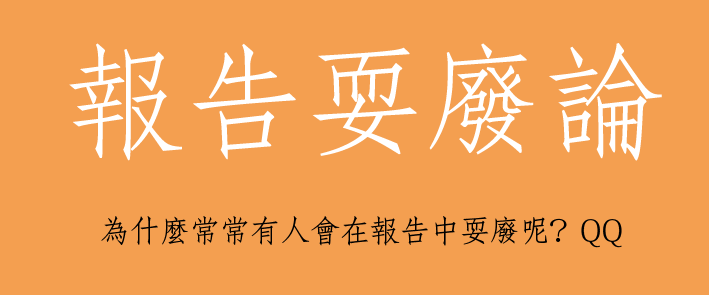
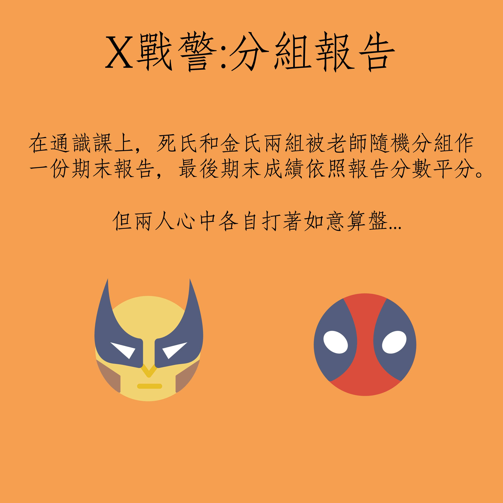
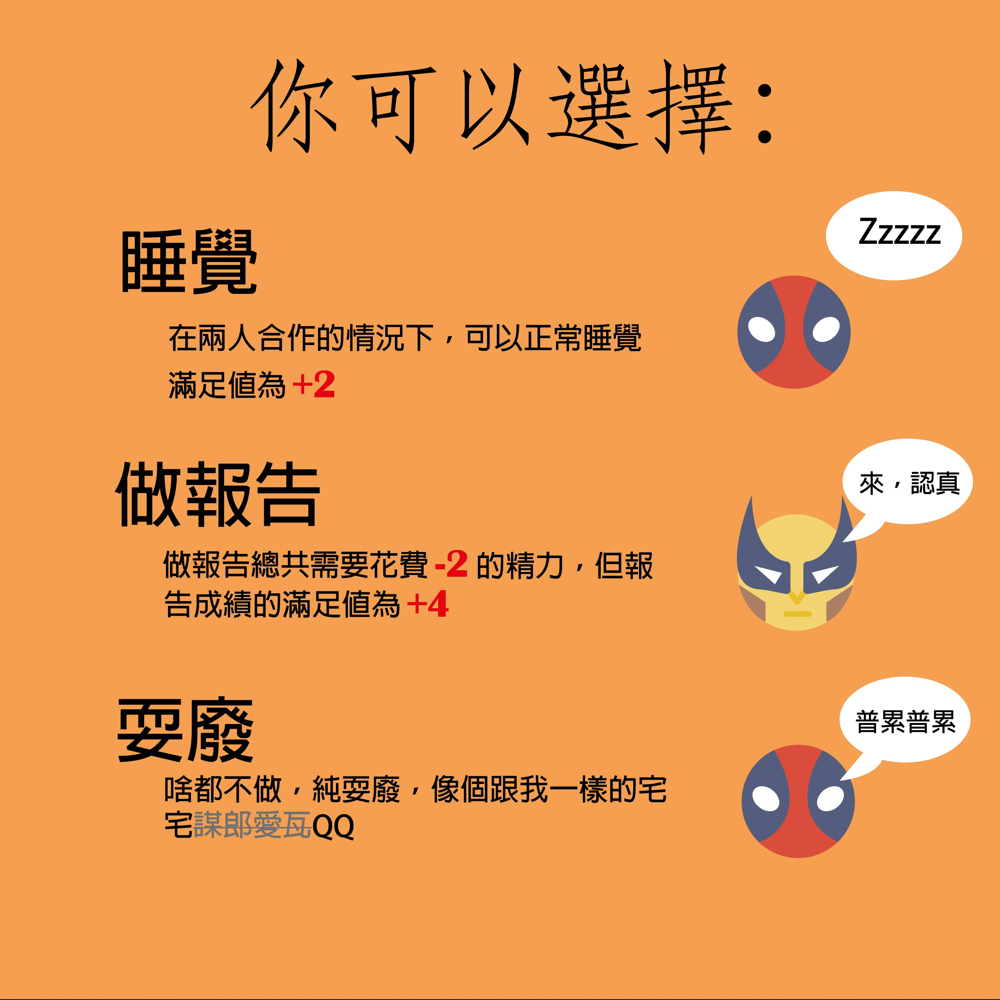
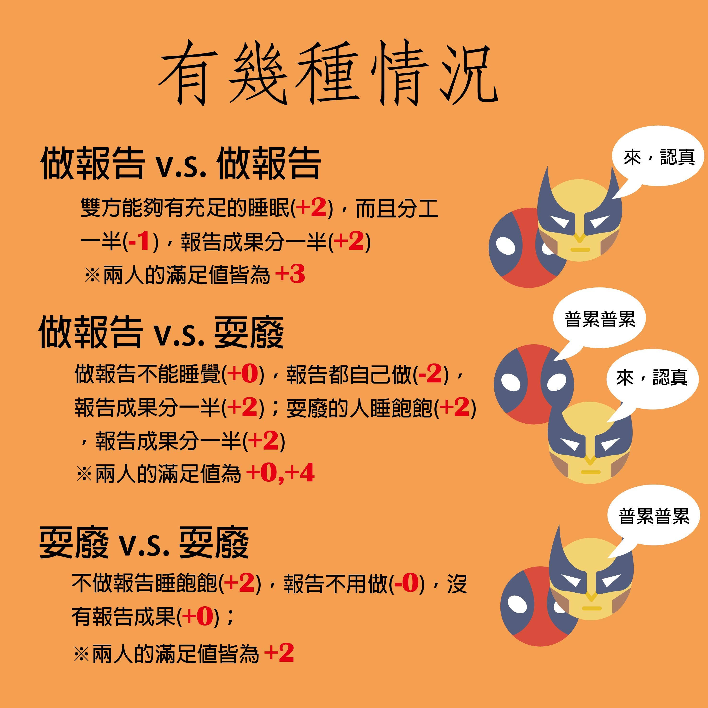
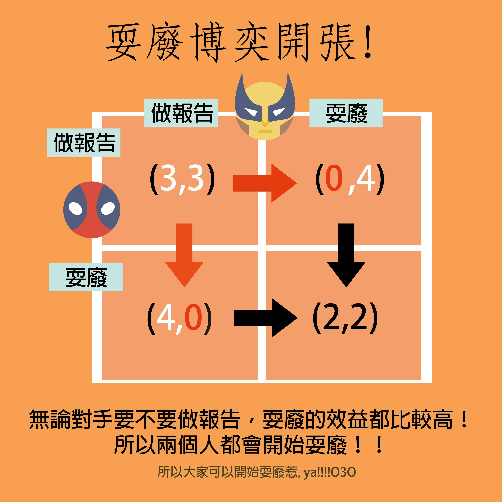
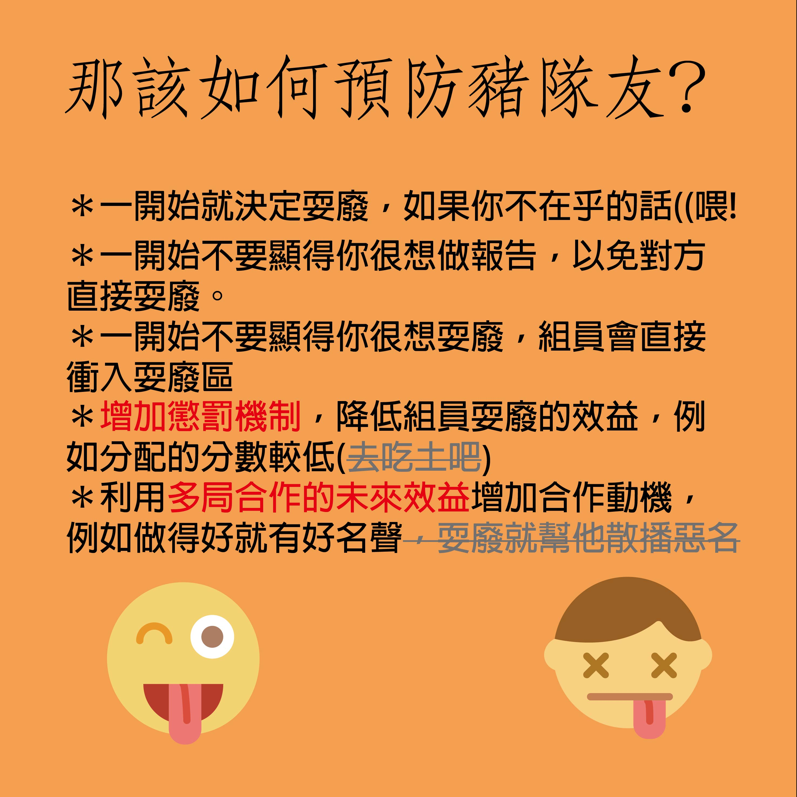

第一次嘗試使用圖像的方式和生活化的方式來表示生活中的囚徒困境。再搭配上最近遇到的分組報告鳥事，所以就想透過這樣例子介紹給大家。
這次以兩人分組報告為例子，在這樣的隨機分組報告中，很多人就不需要考慮未來的合作機會，所以就是一種各懷鬼胎的心態。
在這樣的做報告機制中，有三種很正常的選擇情況，一種就是好好睡覺，一種就是認真做報告，而最後一種就是耍廢。
當兩個人都同時做報告的時候，兩人就可以正常休息，正常分工，正常產出，兩邊的滿足值就皆為 (+3)；而當兩人都在耍廢的時候，兩人一樣睡飽飽，但沒人需要做報告，所以滿足值都為 (+2)；而常見的情況就是一人在做報告跟一人在耍廢，做報告的人做到死，但成果要分一半 (+0)，但耍廢的人就只要睡覺就可以拿分數，所以滿足值為 (+4)
可怕的是，無論對手要步要做報告，耍廢的效益都比較高！！！！！！所以最後兩個人都會開始耍廢了，ya!!!
希望大家可以透過這次簡單的類比，讓大家可以更加快速的了解賽局理論，也可以對更多不同科目有更多的興趣！！